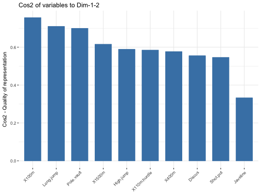
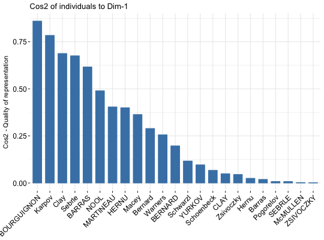

Visualize the quality of representation of rows/columns
This function can be used to visualize the quality of representation (cos2) of rows/columns from the results of Principal Component Analysis (PCA), Correspondence Analysis (CA), Multiple Correspondence Analysis (MCA), Factor Analysis of Mixed Data (FAMD), Multiple Factor Analysis (MFA) and Hierarchical Multiple Factor Analysis (HMFA) functions.
fviz_cos2(X, choice = c("row", "col", "var", "ind", "quanti.var", "quali.var", "group"), axes = 1, fill = "steelblue", color = "steelblue", sort.val = c("desc", "asc", "none"), top = Inf, xtickslab.rt = 45, ggtheme = theme_minimal(), ...)
Arguments
- X
- an object of class PCA, CA, MCA, FAMD, MFA and HMFA [FactoMineR]; prcomp and princomp [stats]; dudi, pca, coa and acm [ade4]; ca [ca package].
- choice
- allowed values are "row" and "col" for CA; "var" and "ind" for PCA or MCA; "var", "ind", "quanti.var", "quali.var" and "group" for FAMD, MFA and HMFA.
- axes
- a numeric vector specifying the dimension(s) of interest.
- fill
- a fill color for the bar plot.
- color
- an outline color for the bar plot.
- sort.val
- a string specifying whether the value should be sorted. Allowed values are "none" (no sorting), "asc" (for ascending) or "desc" (for descending).
- top
- a numeric value specifying the number of top elements to be shown.
- xtickslab.rt
- Same as x.text.angle and y.text.angle, respectively. Will be deprecated in the near future.
- ggtheme
- function, ggplot2 theme name. Default value is theme_pubr(). Allowed values include ggplot2 official themes: theme_gray(), theme_bw(), theme_minimal(), theme_classic(), theme_void(), ....
- ...
- not used
Value
a ggplot
References
http://www.sthda.com/english/
Examples
# Principal component analysis # ++++++++++++++++++++++++++ data(decathlon2) decathlon2.active <- decathlon2[1:23, 1:10] res.pca <- prcomp(decathlon2.active, scale = TRUE) # variable cos2 on axis 1 fviz_cos2(res.pca, choice="var", axes = 1, top = 10 )# Change color fviz_cos2(res.pca, choice="var", axes = 1, fill = "lightgray", color = "black")# Variable cos2 on axes 1 + 2 fviz_cos2(res.pca, choice="var", axes = 1:2)# cos2 of individuals on axis 1 fviz_cos2(res.pca, choice="ind", axes = 1)## Not run: ------------------------------------ # # Correspondence Analysis # # ++++++++++++++++++++++++++ # library("FactoMineR") # data("housetasks") # res.ca <- CA(housetasks, graph = FALSE) # # # Visualize row cos2 on axes 1 # fviz_cos2(res.ca, choice ="row", axes = 1) # # Visualize column cos2 on axes 1 # fviz_cos2(res.ca, choice ="col", axes = 1) # # # Multiple Correspondence Analysis # # +++++++++++++++++++++++++++++++++ # library(FactoMineR) # data(poison) # res.mca <- MCA(poison, quanti.sup = 1:2, # quali.sup = 3:4, graph=FALSE) # # # Visualize individual cos2 on axes 1 # fviz_cos2(res.mca, choice ="ind", axes = 1, top = 20) # # Visualize variable categorie cos2 on axes 1 # fviz_cos2(res.mca, choice ="var", axes = 1) # # # Multiple Factor Analysis # # ++++++++++++++++++++++++ # library(FactoMineR) # data(poison) # res.mfa <- MFA(poison, group=c(2,2,5,6), type=c("s","n","n","n"), # name.group=c("desc","desc2","symptom","eat"), # num.group.sup=1:2, graph=FALSE) # # Visualize individual cos2 on axes 1 # # Select the top 20 # fviz_cos2(res.mfa, choice ="ind", axes = 1, top = 20) # # Visualize catecorical variable categorie cos2 on axes 1 # fviz_cos2(res.mfa, choice ="quali.var", axes = 1) ## ---------------------------------------------